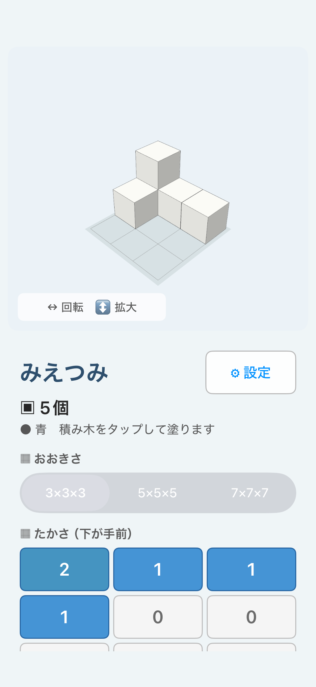

Explore 3D shapes from every direction
MieTsumi is a 3D building-block app that lets you construct models on screen and examine them from different directions.
Rotate and zoom freely, or switch instantly to front, left, right, back, and top views. These tools make it easier to examine shapes that can be difficult to understand from a flat illustration alone.
MieTsumi can also support learning activities involving block counting, how a shape changes with the viewing direction, and the relationship between light and shadow.

What you can do
Build with blocks
Set a height for each grid position to construct a model. The app can also display the total number of blocks.
View from different directions
Rotate and zoom freely, or switch to Angled, Front, Left, Right, Back, and Top Views.
Examine hidden areas
In addition to the normal display, use Transparent View or Wireframe View to inspect obscured blocks and overlaps.
Add color
Select a color and tap individual blocks. Color can make groups and spatial relationships easier to recognize.
Count with Antenna Markers
Short vertical lines appear above each stack. The number of lines matches the number of blocks in that stack.
Move light and shadow
Move the light source to see how the direction and shape of each shadow changes.
Save to Photos
Save an image of your block model to the device’s photo library.
Learn more
User Guide
Learn how to place blocks, change views and display modes, add color, and save photos.
Read the user guide →Learning with MieTsumi
Learn ways to explore block counts, viewing directions, Antenna Markers, and light and shadow.
Explore learning activities →Free and Full Versions
See the features currently planned for the free version and the Full Version.
View Free and Full Versions →Privacy Policy
Read how the app handles data and saved images.
Read the privacy policy →Frequently asked questions
What are Antenna Markers?
They are a visual aid for counting blocks in each vertical stack. Short lines appear above the top block, and the number of lines matches the number of blocks in that stack.
What is the difference between Transparent and Wireframe Views?
Transparent View makes block faces translucent. Wireframe View focuses on outlines. Both can help reveal hidden areas and overlapping blocks.
Does MieTsumi require an internet connection?
Building and rotating models generally does not require one. In-app purchases, restoring purchases, and opening support pages may require a connection.
Where are saved images stored?
When the user taps “Save to Photos,” the image is saved to the device’s photo library. It is not sent to the developer.
Does MieTsumi collect usage data?
MieTsumi does not use advertising, usage analytics, user accounts, or location collection. See the Privacy Policy for details.
Does the app include problem sets or automatic scoring?
No. MieTsumi is a tool for building the same shape as a problem and checking spatial relationships. It does not provide problem sets or automatic scoring.
Which devices will be supported?
Support is planned for iPhone and iPad running iOS or iPadOS 15 or later.
Contact
For questions about problems or how to use MieTsumi, contact:
When reporting a screen or behavior issue, include the following when possible:
- Device model
- iOS or iPadOS version
- MieTsumi version
- Steps that led to the issue
- A screenshot of the screen
Do not send personal information or images showing other people.